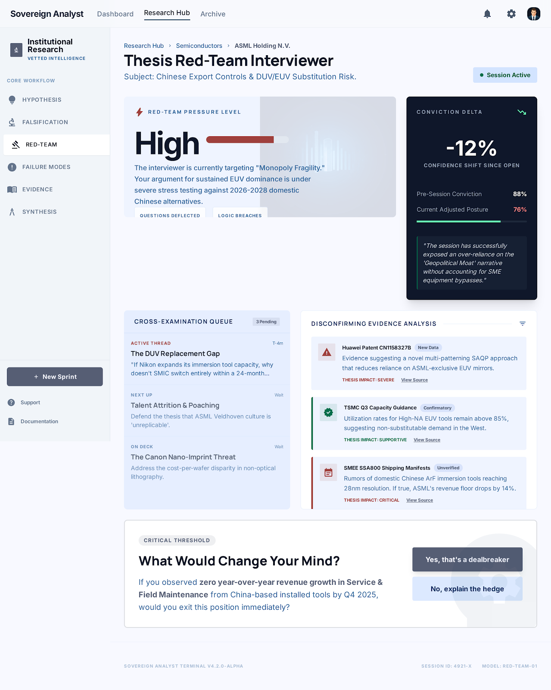

PF SAFE DEMO · 2026-02-27-p001
Thesis Red-Team Interviewer
Challenge a thesis with structured adversarial questions so weak assumptions surface early.
ingest status
Imported from Stitch exportStitch output is archived as a source artifact while the live PF demo serves a local safe wrapper with the approved screen.
- Source preserved as local artifact
- Public demo path avoids remote CDN dependency
- Preview uses the shipped Stitch screen
